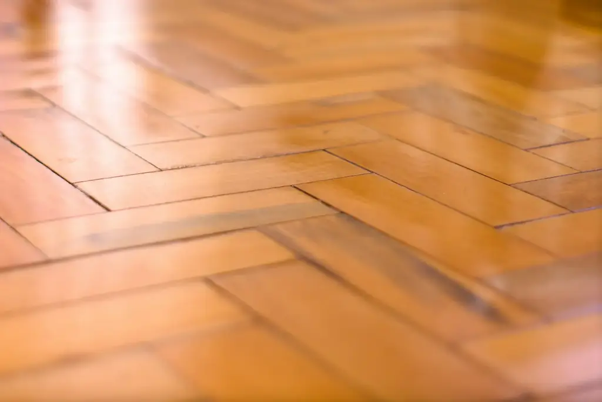
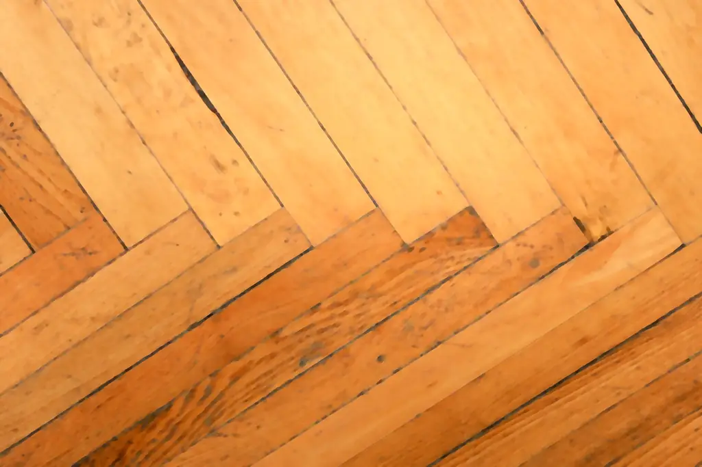
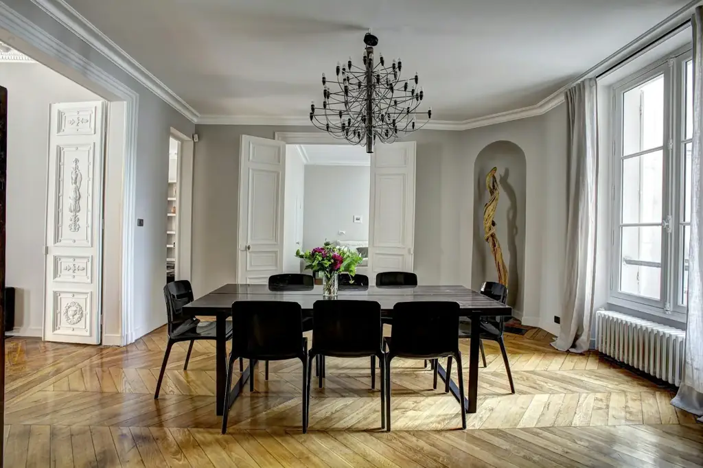
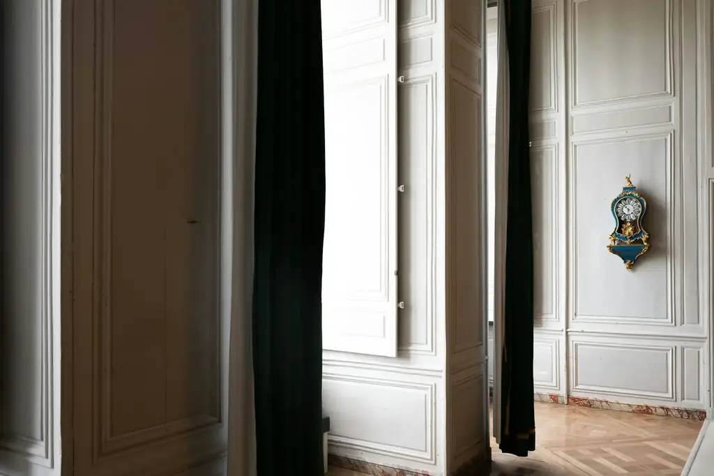

Le bois,
tel qu’au premier jour.
Un parquet terni, rayé ou grisé n’est pas à changer : poncé à blanc, repris et vitrifié, il retrouve sa couleur et sa résistance pour des années.
Rayé, grisé,
puis retrouvé.
Les rayures, les traces de passage et le vernis jauni partent au ponçage. Le bois d’origine réapparaît, et la vitrification le protège.
Faites glisser la poignée sur la photo pour voir l’avant.

AvantAprèsDu ponçage
à la finition.
Chaque parquet a son histoire. On commence par regarder l’essence, l’épaisseur d’usure et l’état des lames.
Ponçage en trois passes
Gros grain pour retirer l’ancien vernis et les rayures, grain moyen, puis grain fin pour un bois doux au toucher. Bordures et angles reprennent à la bordureuse. Les poussières sont aspirées à la source.
Reprise des lames
Lames décollées recollées, joints rebouchés à la pâte teintée, pièces trop abîmées remplacées quand c’est possible.
Vitrification
Un vitrificateur en phase aqueuse, mat, satiné ou brillant, en deux ou trois couches avec égrenage entre chacune. Idéal pour les pièces à passage.
Huile ou cire
Pour un aspect plus naturel et un bois qui se répare localement. Plus d’entretien, mais un rendu chaleureux, très adapté aux chalets.

Un parquet ancien
se rénove, il ne se jette pas.
Point de Hongrie,
bâton rompu, lames.
Dans les appartements anciens de Grenoble, de Lyon ou de Genève, le parquet est souvent la plus belle pièce du logement. Il mérite mieux qu’un vernis rapide.
Chêne massif, contrecollé, sapin dans les chalets : le grain du premier ponçage et le produit de finition changent selon l’essence et l’épaisseur restante. Un parquet contrecollé ne se ponce qu’une ou deux fois dans sa vie : on le vérifie avant de commencer.
Le ponçage du parquet se fait idéalement en fin de rénovation, une fois la peinture terminée, pour ne pas abîmer le sol neuf. David organise les étapes dans le bon ordre.
Parquet :
vos questions.
Combien de temps dure le ponçage et la vitrification d’un parquet ?
Pour une pièce de 20 à 30 m², comptez en général deux à trois jours : un jour de ponçage et de reprises, puis les couches de vitrificateur avec leurs temps de séchage. La pièce est praticable en chaussettes le lendemain de la dernière couche, et meublée quelques jours après.
Vitrifier ou huiler son parquet ?
La vitrification forme un film dur, facile à entretenir, adapté aux pièces à passage et aux familles. L’huile nourrit le bois, donne un aspect plus naturel et se répare par zones, mais demande un entretien régulier.
Peut-on poncer un parquet contrecollé ?
Oui si la couche d’usure est assez épaisse, en général une à deux fois dans sa vie. On mesure l’épaisseur avant de proposer un ponçage.
Y a-t-il beaucoup de poussière ?
Les machines utilisées sont reliées à une aspiration. Il reste un peu de poussière fine, c’est pourquoi on isole la pièce et on nettoie avant chaque couche.

Un parquet à retrouver ?
Surface, type de parquet, état actuel : un prix de départ en une minute.